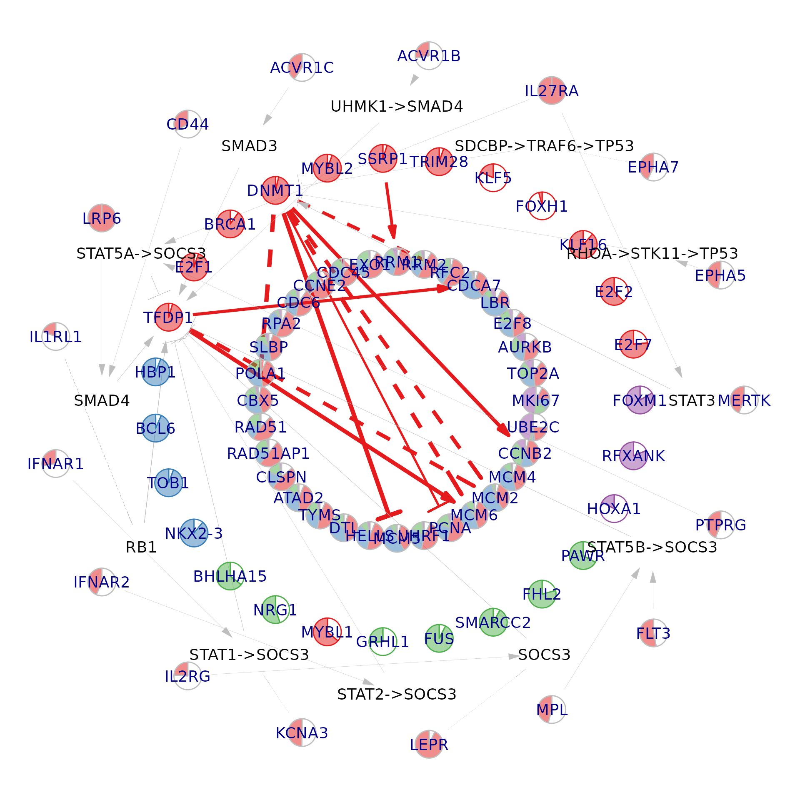
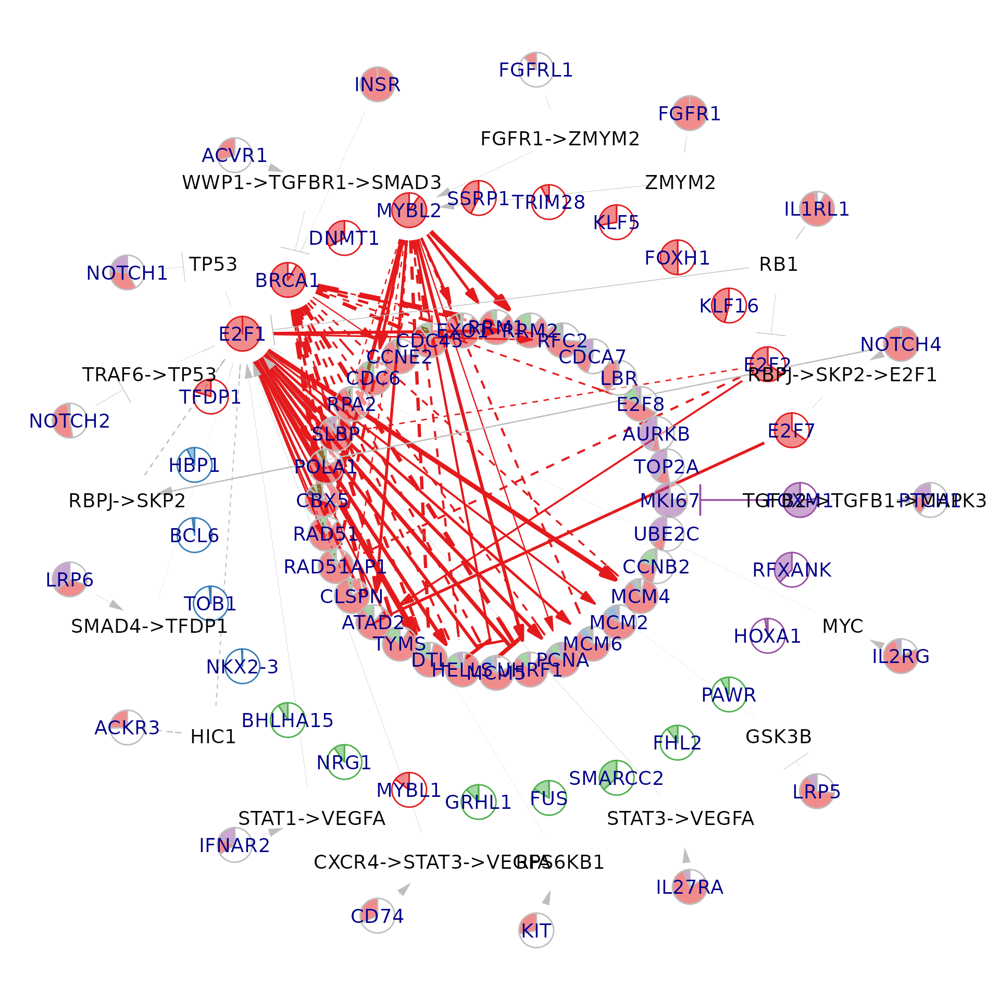
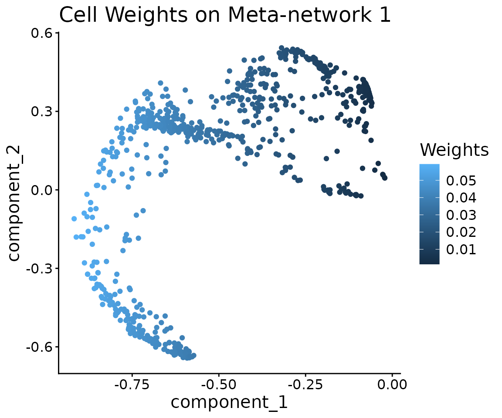
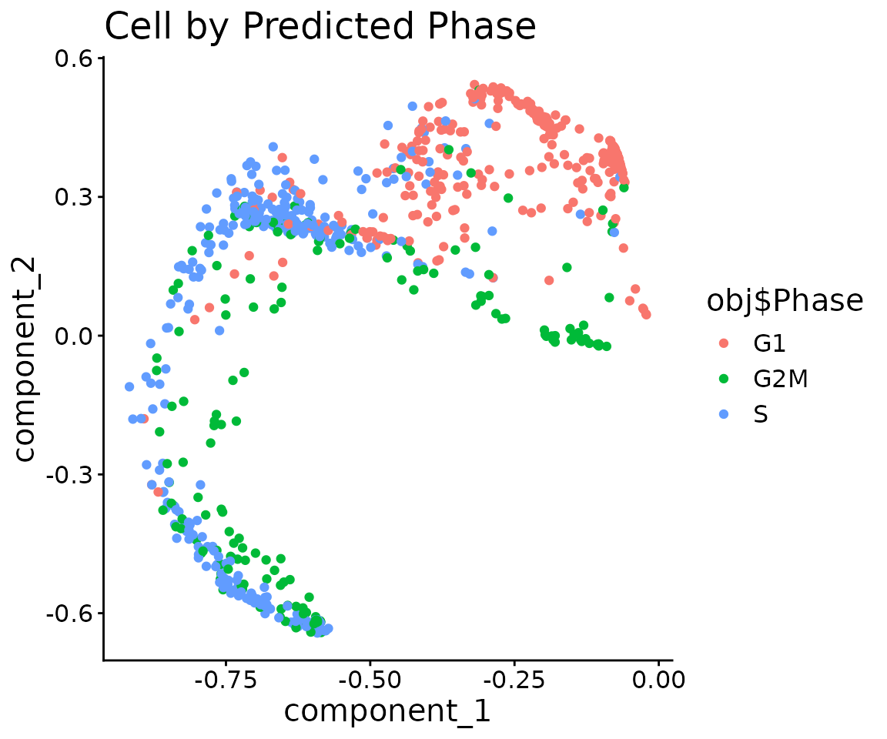
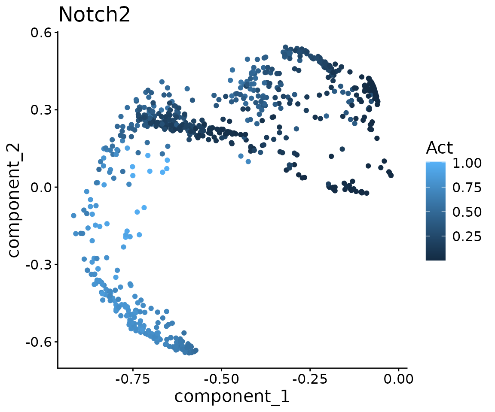

NeighbourNet: Workflow Example
Yidi Deng
2025-11-10
cell-cycle.Rmd
library(Seurat)
#> Loading required package: SeuratObject
#> Loading required package: sp
#>
#> Attaching package: 'SeuratObject'
#> The following objects are masked from 'package:base':
#>
#> intersect, t
library(NeighbourNet)
library(ggplot2)
library(igraph)
#>
#> Attaching package: 'igraph'
#> The following object is masked from 'package:Seurat':
#>
#> components
#> The following objects are masked from 'package:stats':
#>
#> decompose, spectrum
#> The following object is masked from 'package:base':
#>
#> union
library(patchwork)
# Data of murine hematopoietic progenitors generated by Nestorowa et al. (2016)
# We acquired the data from the Seurat vignette that demonstrate cell-cycle scoring
# https://satijalab.org/seurat/articles/cell_cycle_vignette.html
exp.mat <- read.table(
file = "./nestorawa_forcellcycle_expressionMatrix.txt",
header = TRUE,
row.names = 1,
check.names = FALSE
)
# Cell-cycle markers from Tirosh et al. (2015) are available via Seurat.
# These are separated into S-phase and G2/M-phase markers.
s.genes <- cc.genes$s.genes
g2m.genes <- cc.genes$g2m.genes
# Create a Seurat object and run basic preprocessing
obj <- CreateSeuratObject(
counts = Matrix::Matrix(as.matrix(exp.mat), sparse = TRUE)
)
obj <- NormalizeData(obj)
#> Normalizing layer: counts
obj <- CellCycleScoring(
obj,
s.features = s.genes,
g2m.features = g2m.genes,
set.ident = TRUE
)
#> Warning: The following features are not present in the object: MLF1IP, GMNN,
#> not searching for symbol synonymsPreprocessing
We first perform quality control and gene selection, then prepare the object for NeighbourNet.
# Filter out lowly expressed genes and annotate TFs/targets/receptors/ligands
genes <- NeighbourNet::select.gene(obj, min.cells = 10)Run PCA on the selected genes. Co-expression will be measured within this gene set.
obj <- NeighbourNet::prepare.seurat(obj, genes = genes$genes)
#> Running Seurat scaling and PCA...Construct the KNN graph used by NeighbourNet.
obj <- NeighbourNet::prepare.graph(obj)
#> Building KNN graph...Optionally, for data sets with many cells (> 5000), you can run the regression on a subset of representative cells.
# Not run
obj <- NeighbourNet::select.cell(obj)Finally, set up the regression problem and compute local variance.
# Local variance is computed for predictor and response genes.
# Response genes are low-rank approximated.
# Here we measure co-expression between TFs (predictors) and cell-cycle targets (responses).
targets <- c(s.genes, g2m.genes)
obj <- NeighbourNet::prepare.reg(
obj,
predictors = genes$tfs,
responses = targets
)
#> Calculating local variance.The NeighbourNet regression settings are stored in the
misc slot:
NeighbourNet regression
Run NeighbourNet regression to obtain per-cell co-expression networks.
obj <- NeighbourNet::run.nn.reg(
obj,
responses = targets,
return.p.val = TRUE
)
#> Return smoothed effect, can only generate networks for sampled cells.
#> Return unpruned effect.
#> Return p-value.
#> Downstream analysis will be performed on the effect tensor.
#> Downstream analysis will perform network pruning.
#> Build the Laplacian operator.
#> Now regress.The resulting network ensemble is stored in NNet.mod
within the misc slot.
# effect: (response × predictor × cell) tensor of co-expression effect sizes
# p.val : corresponding significance tensor
Seurat::Misc(obj, "NNet.mod") %>% names()
#> [1] "effect" "p.val" "meta.network" "meta.response"
#> [5] "mus" "sigmas" "subsampled" "smoothed"
#> [9] "pruned" "gene.sets" "cells" "defaults"
#> [13] "custom.y" "w"Build meta-networks summarising the per-cell networks.
obj <- NeighbourNet::build.meta.network(obj)
#> Now construct the covariance matrix.
#> Eigen decomposition.
#> Non-negative PCA.Meta-networks are stored as a (response × predictor × meta-cell) tensor:
Visualisation
We next visualise key TF–target subnetworks and upstream signalling structure.
Select central genes
First, identify central genes based on eigenvector centrality across meta-networks.
# All responses will be visualised when keep.responses = TRUE.
# n.net controls the number of meta-networks to examine.
# For each meta-network, k singular vectors are used, and
# n.per.component top-loading genes per component are selected.
central.genes <- NeighbourNet::select.central.genes(
obj,
keep.responses = FALSE,
n.per.component = 4,
n.net = 5,
k = 2
)Prepare visualisation settings
# TFs (or the chosen g2 layer) are clustered into n.clu groups (colour-coded)
obj <- NeighbourNet::prepare.visualise(
obj,
central.genes = central.genes,
n.clu = 4
)Visualise a per-cell network
i <- 1
NeighbourNet::visualise.network(
obj,
i,
cutoff = 0.95,
radius = c(0.4, 0.7, 0.85, 1),
pie.radius = 0.04,
text.size = 5
)
#> Warning: The `vp` argument of `get_edge_ids()` supplied as a matrix should be a n times
#> 2 matrix, not 2 times n as of igraph 2.1.5.
#> ℹ either transpose the matrix with t() or convert it to a data.frame with two
#> columns.
#> ℹ The deprecated feature was likely used in the igraph package.
#> Please report the issue at <https://github.com/igraph/rigraph/issues>.
#> This warning is displayed once per session.
#> Call `lifecycle::last_lifecycle_warnings()` to see where this warning was
#> generated.
Visualise a meta-network component
i <- 1
meta.p <- Seurat::Misc(obj, "NNet.mod")$meta.network$p.val[,, i]
cutoff <- apply(meta.p, 1, max) %>%
sort(decreasing = TRUE) %>%
mean()
NeighbourNet::visualise.network(
obj,
i,
meta.network = TRUE,
cutoff = cutoff,
radius = c(0.4, 0.7, 0.85, 1),
pie.radius = 0.04,
text.size = 5
)
Visualise meta-network components in PC space
We can also inspect which cells contribute to a given meta-network component in the meta-network PC space.
i <- 1
pcs <- Seurat::Misc(obj, "NNet.mod")$meta.network$pcs
weights <- Seurat::Misc(obj, "NNet.mod")$meta.network$npca.loadings[, i]
ggplot(pcs) +
geom_point(aes(component_1, component_2, colour = weights)) +
scale_color_continuous("Weights")+
theme_classic() +
theme(text = element_text(size = 15))+
ggtitle("Cell Weights on Meta-network 1")
ggplot(pcs) +
geom_point(aes(component_1, component_2, colour = obj$Phase)) +
scale_color_discrete("Phase")+
theme_classic() +
theme(text = element_text(size = 15)) +
ggtitle("Cell by Predicted Phase")
Receptor activity
We now compute receptor activity scores using NeighbourNet’s receptor-TF-target integration.
act <- NeighbourNet::receptor.activity(obj)
#> Now infer receptor activity.Visualise NOTCH2 activity and identify mediating TFs
notch2.act <- act$receptor.act["NOTCH2", ] %>% as.numeric()
ggplot(pcs) +
geom_point(aes(component_1, component_2, colour = notch2.act)) +
scale_color_continuous("Act")+
theme_classic() +
theme(text = element_text(size = 15))+
ggtitle("Notch2")
tf.cor <- cor(notch2.act, t(act$tf.act)) %>%
drop() %>%
sort(decreasing = TRUE)
#> Warning in cor(notch2.act, t(act$tf.act)): the standard deviation is zero
head(tf.cor)
#> E2F1 E2F2 SIN3A E2F5 RFX1 ESRRA
#> 0.9801520 0.7602014 0.5186611 0.5018902 0.3693210 0.3544060We can inspect the inferred signalling path from NOTCH2 to a candidate TF (e.g. E2F1) using the prior signalling graph:
igraph::shortest_paths(
NeighbourNet::sig.graph,
from = "NOTCH2",
to = "E2F1",
weights = 1 / igraph::E(NeighbourNet::sig.graph),
output = "both"
)$vpath
#> [[1]]
#> + 4/9867 vertices, named, from 2d729a0:
#> [1] NOTCH2 TRAF6 TP53 E2F1